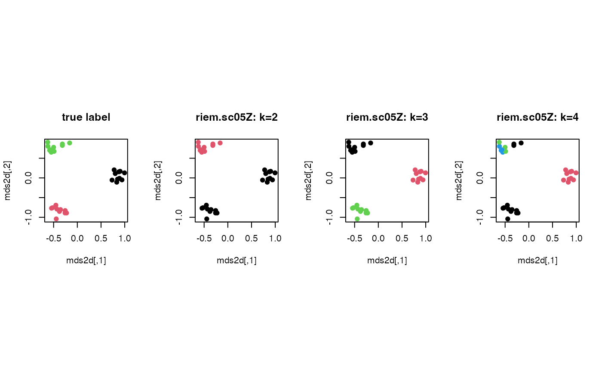

Zelnik-Manor and Perona proposed a method to define a set of data-driven
bandwidth parameters where \(\sigma_i\) is the distance from a point \(x_i\) to its nnbd-th
nearest neighbor. Then the affinity matrix is defined as
$$A_{ij} = \exp(-d(x_i, d_j)^2 / \sigma_i \sigma_j)$$ and the standard
spectral clustering of Ng, Jordan, and Weiss (riem.scNJW) is applied.
Usage
riem.sc05Z(riemobj, k = 2, nnbd = 7, geometry = c("intrinsic", "extrinsic"))Value
a named list containing
- cluster
a length-\(N\) vector of class labels (from \(1:k\)).
- eigval
eigenvalues of the graph laplacian's spectral decomposition.
- embeds
an \((N\times k)\) low-dimensional embedding.
References
Zelnik-manor L, Perona P (2005). "Self-Tuning Spectral Clustering." In Saul LK, Weiss Y, Bottou L (eds.), Advances in Neural Information Processing Systems 17, 1601–1608. MIT Press.
Examples
#-------------------------------------------------------------------
# Example on Sphere : a dataset with three types
#
# class 1 : 10 perturbed data points near (1,0,0) on S^2 in R^3
# class 2 : 10 perturbed data points near (0,1,0) on S^2 in R^3
# class 3 : 10 perturbed data points near (0,0,1) on S^2 in R^3
#-------------------------------------------------------------------
## GENERATE DATA
mydata = list()
for (i in 1:10){
tgt = c(1, stats::rnorm(2, sd=0.1))
mydata[[i]] = tgt/sqrt(sum(tgt^2))
}
for (i in 11:20){
tgt = c(rnorm(1,sd=0.1),1,rnorm(1,sd=0.1))
mydata[[i]] = tgt/sqrt(sum(tgt^2))
}
for (i in 21:30){
tgt = c(stats::rnorm(2, sd=0.1), 1)
mydata[[i]] = tgt/sqrt(sum(tgt^2))
}
myriem = wrap.sphere(mydata)
lab = rep(c(1,2,3), each=10)
## CLUSTERING WITH DIFFERENT K VALUES
cl2 = riem.sc05Z(myriem, k=2)$cluster
cl3 = riem.sc05Z(myriem, k=3)$cluster
cl4 = riem.sc05Z(myriem, k=4)$cluster
## MDS FOR VISUALIZATION
mds2d = riem.mds(myriem, ndim=2)$embed
## VISUALIZE
opar <- par(no.readonly=TRUE)
par(mfrow=c(1,4), pty="s")
plot(mds2d, col=lab, pch=19, main="true label")
plot(mds2d, col=cl2, pch=19, main="riem.sc05Z: k=2")
plot(mds2d, col=cl3, pch=19, main="riem.sc05Z: k=3")
plot(mds2d, col=cl4, pch=19, main="riem.sc05Z: k=4")

par(opar)